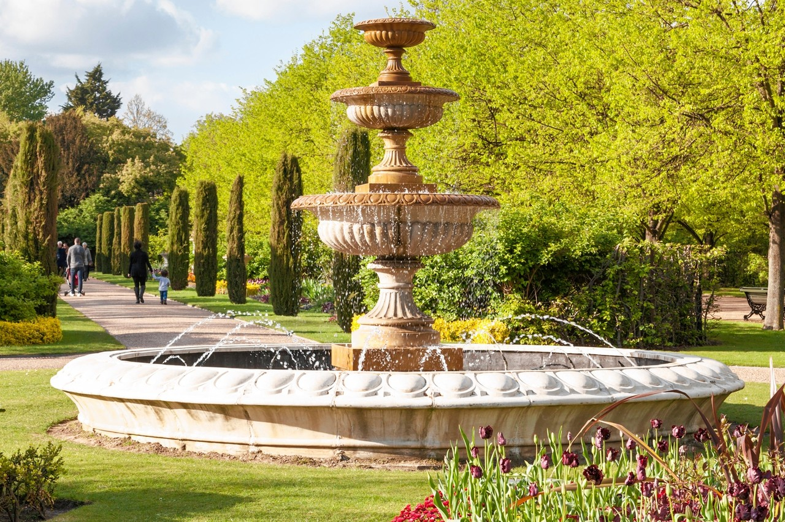
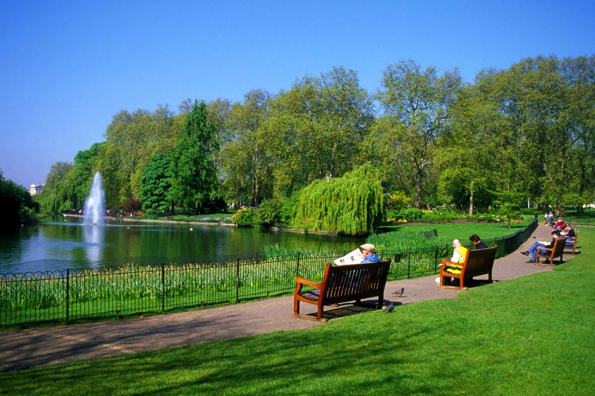
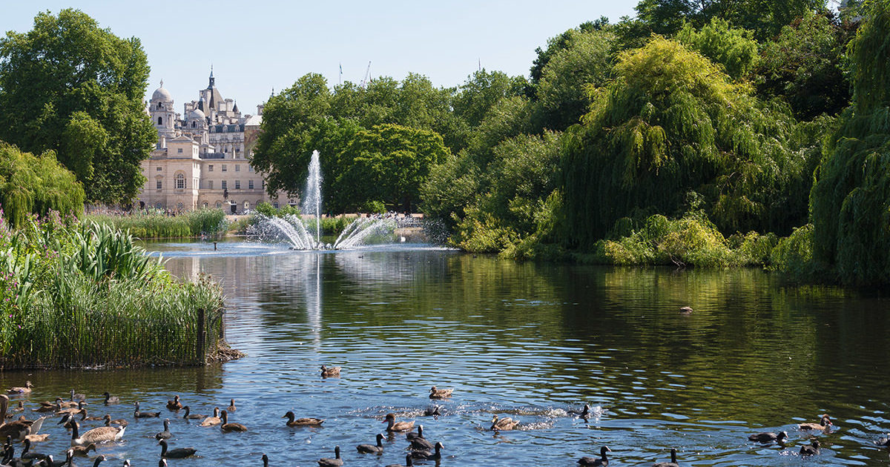
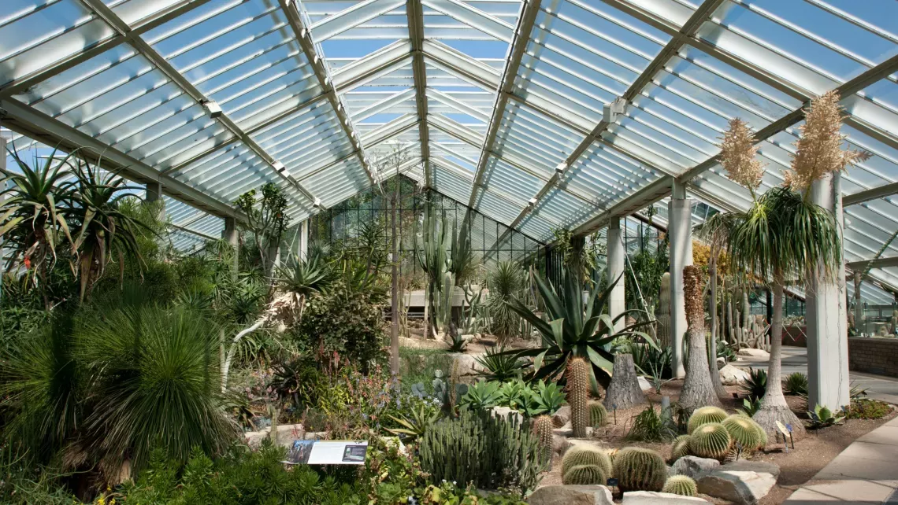
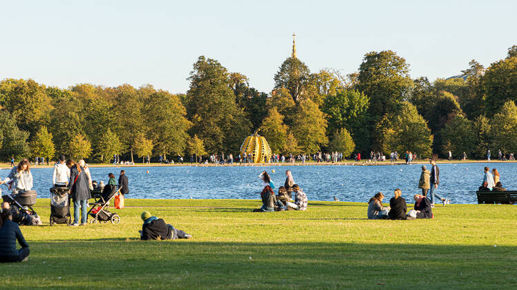
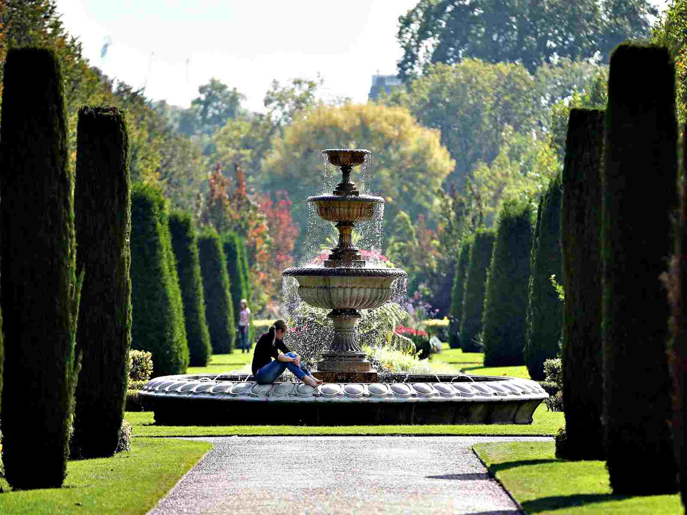

EXPLORE LONDON
GUIDE TO ENJOYING YOUR VISIT ACROSS THE POND
Outdoor Spaces to Enjoy in London
 |


|
|---|
London's illustrious and vibrant parks and gardents provides both locals and tourists with a peaceful space to get a breath of fresh air in an otherwise busy city. They are the perfect places to go for walks or enjoy a nice picnic will loved ones. These tranquil areas serve as a retreat to many while capturing London's natural beauty.
St. James's Park
Address: London SW1A 2BJ, United Kingdom
St. James's Park is one of London's oldest royal parks. Located between Buckingham Palace and the House of Parliment, is recognized for its breathtaking landscapes, trees that perfectly capture the changing seasons, and swan pedal boats that give visitors the chance to experience the park from a brand new perspective. Visitors will also notice the constant prescence of wildlife such as ducks, pigeons, geese, pelicans, and squirrels that contribute to the vibrancy of the park. When standing on the park's Blue Bridge, onlookers can get clear view of Buckingham Palace, Big Ben, and the London Eye. St. James's Park is full of different memorials and fountains, some of the most iconic ones being the Queen Victoria Memorial and the Tiffany Fountain.
Are There Places to Eat Near St. James's Park?
After all of the walking and sightseeing, it is only natural for visitors to get hungry and tired. Luckily, there are a few cafes scattered throughout the park where people can rest and recharge. Two of them include St. James's Café and Storey's Gate Café.
What Are the Hours for St. James's Park?
The park is open to the public every day of the year from morning till night. There are no specific hours that guests must strictly adhere to, but visitors tend to show up anytime between 5:00am and 9:00pm.
How Can People Get to St. James's Park?
There are a few tube stations people can use to get to St. James's Park. There is Westminster (through the Jubilee, Circle, and Distric lines), St. James's Park (through the Circle and District lines), Charing Cross (through the Northern and Bakerloo lines), and Green Park (through the Victoria, Jubilee, and Picadilly lines).
Do People Have to Pay a Fee to Enter?
No, visitors do not have to pay any fee. The entirety of St. James's Park is completely free to the public at all times.
Kew Gardens
Address: Richmond, United Kingdom
Kew Gardens, also known as the Royal Botanical Gardens, is home to a wide variety of plants from different areas around the world. It was founded in 1759 and serves as a crucial location for the scientific research and conservation of plants. To meet the needs for each plant species, the garden features different landscapes and ecosystems that help both scientists and tourists gain a better insight into the biodiversity of these plants. In addition to its scientific purposes, the Kew Gardens is a popular destination for tourists to relax. They can walk through gardens and watch change with the seasons, as well as learn about different conservation efforts and how they might be able to help.
What Kind of Events Are Held at Kew Gardens?
There are a wide variety of events that Kew Gardens hosts throughout the year. Some of those include outdoor concerts/festivals, art exhibitions, and educational workshops.
Are Tickets Needed to Visit Kew Gardens?
Yes, in order to visit Kew Gardens, tickets must be booked in advance. To purchase tickets, visit the official Kew Gardens website to find a time and date that works best for you.
| Category | Price |
|---|---|
| Adult | £12.00 |
| Concession | £6.00 |
| Child | £4.00 |
| Infant | Free |
How Can People Get to Kew Gardens?
There are a few different ways for people to get to Kew Gardens. First, there is the Kew Gardens District Line, as well as the bus routes 65, 391, 237, and 267. It is important to keep in mind that bus routes 65 and 391 will stop near the entry gate for Kew Gardens, while routes 237 and 267 stop at Kew Bridge station, which is nearby the garden. For those who choose to drive straight to the garden, there is parking available on site. The parking is available near the main entrance, but can fill up rather quickly on very busy days. For this reason, using public transport is highly encouraged.
How Much Time Do Visitors Usually Spend at Kew Gardens?
That amount of time spent at Kew Gardens typically depends on the interests on the guests. Most visitors usually spend about 3 to 4 hours walking through the gardens. That being said, it is not uncommon for those who really get immersed into the environment to spend their entire day there.
Hyde Park
Address: London, United Kingdom
Hyde Park is one of London's most historical parks, was founded in 1536 and has become a widely popular spot for tourists and locals for all types of recreational purposes. The wide open space makes it ideal for those who like to go on walks, or young children looking to place a nice game of tag. Another popular interest point would be the Serpentine, which is a large lake located in the middle of the park. There, people are able to go boating and get a beautiful view of the entire park. Visitors also tend to flock towards the park's Speaker's Corner, which is a popular spot for public debates and speeches.
Do People Have to Pay A Fee to Enter?
No, Hyde Park is completely free for the public to access all year long. However, to do things like renting a boat or entering an outdoor concert, some form of payment will be required.
Is There Parking Available At Hyde Park?
There is very limited parking near Hyde Park, and it can get rather expensive. For tourists to avoid high and unecessary costs, it is recommended that they use public transport to get to the park.
Are There Places to Eat and Drink in Hyde Park?
There are quite a few cafes and small stands for people to get snacks and drinks from while they walk around the park. There are two big cafes that the park has to offer. The Serpentine Bar and Kitchen serves guests with a variety of different menu items such as pizza, sandwiches, salads, cakes, coffee, and tea. Next, there is the Serpentine Lido Cafe which offers similar items. Of course, visitors are allowed to bring their own food to the park and have a picnic of their own.
How Can People Get to Hyde Park?
There are a few different ways for people to reach Hyde Park using the Underground system depending on where they are located. They consist of the following:
- Hyde Park Corner (using the Picadilly Line)
- Lancaster Gate (using the Central Line)
- Mabel Arch (using the Central Line)
- Padding Station (using the Bakerloo, Central, and District Lines)
Regent's Park
Address: London NW1 4NR, United Kingdom
Regent's Park is one of the most spacious parks in all of London. It features a series of gardens, open lawns, and a marvelous lake. The Park is home to Queen Mary's Gardens, which has over 12,000 roses. Different kinds of wildlife such as squirrels and grey herons can be found all over the park. To get a closer look at some more rare animals, people can visit the London Zoo which is located in the northern area of the park. It is home to over 700 species of animals and contains animals like penguins, meerkats, and giraffes. For those who want a more cultural experience from the park, they host the Regent's Park Open Air Theatre that puts on a number of different plays, musicals, and comedies from May to September.
Does Regent's Park Have Fitness Facilities?
Yes, there are a number of different ways for people to get in some exercise at the park. This includes outdoor spaces for tennis, outdoor gyms, and sports fields for those who want to play football or rugby. There is also the Regent's Park Sports Centre which offers more recreational activities and fitness classes.
Can People Host Events at Regent's Park?
Yes, because Regent's Park is free and open to the public, visitors are allowed to host their own events and picnics with friends and family. Depending on the size of the event, a permit might need to be obtained through the Royal Parks authorities.
How Can People Get to Regent's Park?
There are a few different ways for people to reach Regent's Park using the tube stations depending on where they are located. They consist of the following:
- Regent's Park (using the Metropolitan, Jubilee, Bakerloo, Hammersmith, and City Lines)
- Baker Street (using the Metropolitan, Jubilee, Bakerloo, Hammersmith, and City Lines)
- St. John's Wood (using the Jubilee Line)
- Great Portland Street (using the Hammersmith, Metropolitan, Circle, and City Lines)
Does Regent's Park Have an Opening and Closing Time?
Yes, Regent's Park does have weekly hours. The park opens at 5:00am and closes at 12:00am everyday during the year.